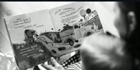

Education
Understanding how early parenthood can affect educational opportunities.
Introduction and advocacy
Becoming a parent at an early age is a life-changing experience that comes with responsibilities, challenges, and sacrifices.
Early parenthood can affect a young person's education, emotional well-being, financial stability, relationships, and future opportunities.
This advocacy aims to raise awareness, encourage responsible decision-making, and promote understanding and support for young parents.
To educate young people about the realities of early parenthood, the importance of reproductive health awareness, and the responsibilities that come with raising a child.

Understanding how early parenthood can affect educational opportunities.
Recognizing the emotional, physical, and financial responsibilities of parenting.
Promoting informed decisions, prevention, and access to proper guidance.